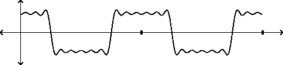
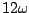
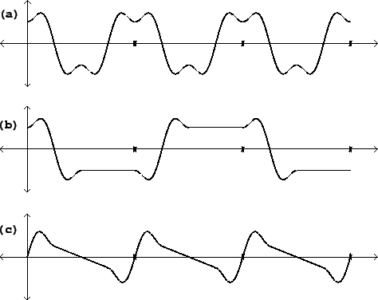
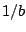
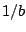

In the point of view developed in this chapter, the energy of the spectral components of classical waves can be attributed entirely to their jumps and corners. This is artificial, of course: the energy really emanates from the entire waveform. Our derivation of the spectrum of the classical waveforms uses the jumps and corners as a bookkeeping device, and this is possible because the entire waveform is determined by their positions and magnitudes.
Taking this ruse even further, the problem of making band-limited versions of classical waveforms can be attacked by making band-limited versions of the jumps and corners. Since the jumps are the more serious foldover threat, we will focus on them here, although the approach described here works perfectly well for corners as well.
|  |
To construct a band-limited step function, all we have to do is add the Fourier
components of a square wave, as many as we like, and then harvest the step
function at any one of the jumps. Figure 10.9 shows the partial
Fourier sum corresponding to a square wave, using partials 1, 3, 5, 7, 9, and
11. The cutoff frequency can be taken as  (if  is the
fundamental frequency).
is the
fundamental frequency).
If we double the period of the square wave, to arrive at the same cutoff frequency, we would add twice as many Fourier partials, up to number 23, for instance. Extending this process forever, we would eventually see the ideal band-limited step function, twice per (arbitrarily long) period.
In practice we can do quite well using only the first two partials (one and three times the fundamental). Figure 10.10 (part a) shows a two-partial approximation of a square wave. The cutoff frequency is four times the fundamental; so if the period of the waveform is eight samples, the cutoff is at the Nyquist frequency. Part (b) of the figure shows how we could use this step function to synthesize, approximately, a square wave of twice the period. If the cutoff frequency is the Nyquist frequency, the period of the waveform of part (b) is 16 samples. Each transition lasts 4 samples, because the band-limited square wave has a period of eight samples.
|  |
We can make a band-limited sawtooth wave by adding the four-sample-long transition to a ramp function so that the end of the resulting function meets smoothly with itself end to end, as shown in part (c) of the figure. There is one transition per period, so the period must be at least four samples; the highest fundamental frequency we can synthesize this way is half the Nyquist frequency. For this or lower fundamental frequency, the foldover products all turn out to be at least 60 dB quieter than the fundamental.
Figure 10.11 shows how to generate a sawtooth wave with a spliced
transition. The two parameters are  , the fundamental frequency, and
, the fundamental frequency, and  ,
the band limit, assumed to be at least as large as
,
the band limit, assumed to be at least as large as  . We start with a
digital sawtooth wave (a phasor) ranging from -0.5 to 0.5 in value. The
transition will take place at the middle of the cycle, when the phasor crosses
0. The wavetable is traversed in a constant amount of time, , regardless
of
. We start with a
digital sawtooth wave (a phasor) ranging from -0.5 to 0.5 in value. The
transition will take place at the middle of the cycle, when the phasor crosses
0. The wavetable is traversed in a constant amount of time, , regardless
of  . The table lookup is taken to be non-wraparound, so that inputs out of
range output either -0.5 or 0.5.
. The table lookup is taken to be non-wraparound, so that inputs out of
range output either -0.5 or 0.5.
At the end of the cycle the phasor discontinuously jumps from -0.5 to 0.5, but the output of the transition table jumps an equal and opposite amount, so the result is continuous. During the portion of the waveform in which the transition table is read at one or the other end-point, the output describes a straight line segment.